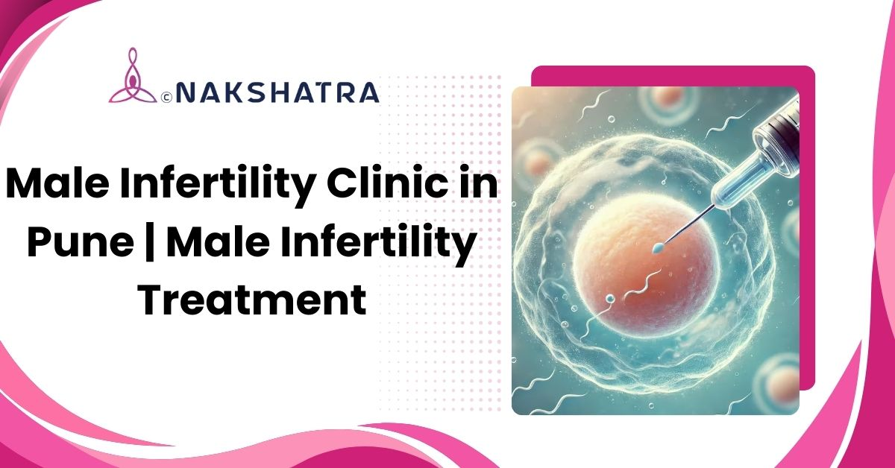

Diagnosis-led care
Semen analysis, hormone tests, ultrasound, and advanced testing guide the next step.
Advanced diagnostics and personalised male fertility treatment for low sperm count, poor motility, DNA fragmentation, azoospermia, varicocele, and related concerns.

Semen analysis, hormone tests, ultrasound, and advanced testing guide the next step.
Medicines, hormones, antioxidants, diet, and habit changes are used when suitable.
Varicocele care, sperm retrieval, IUI, IVF, or ICSI may be advised based on findings.

Male infertility is more common than many couples realise, and it is often treatable when the cause is identified correctly. At Nakshatra IVF & Sexual Wellness Clinic in Pune, evaluation and treatment may include semen analysis, hormone testing, ultrasound, genetic or DNA fragmentation testing, medical therapy, surgical correction, sperm retrieval, and assisted reproduction such as IVF or ICSI when needed.
Common male fertility conditions that can affect conception and reproductive health.
No sperm in semen may need deeper testing and procedures such as TESA, PESA, or Micro-TESE for sperm retrieval.
Low sperm count may be linked to hormonal, lifestyle, varicocele, infection, heat, or medical factors.
Damaged sperm DNA can affect fertilization and embryo development, so DFI testing may be advised.
Low count, poor motility, and abnormal morphology are assessed together for a combined treatment plan.
Treatment may combine medical care, lifestyle guidance, procedures, and assisted reproductive techniques depending on test results.
Explore related male fertility treatments and advanced diagnostic options.
Male infertility refers to difficulty contributing to conception due to low sperm count, poor motility, abnormal sperm shape, hormonal imbalance, or other reproductive health factors.
Common causes include low sperm count, varicocele, hormonal imbalance, infections, genetic issues, stress, smoking, alcohol use, obesity, and heat exposure.
Many cases can be managed with medicines, hormone therapy, antioxidants, lifestyle changes, and nutritional support. Surgery is considered only when it is clinically suitable.
IVF and ICSI can help when sperm count, motility, morphology, or fertilization concerns make natural conception difficult.
Treatment options may include medication, hormone therapy, varicocele care, antioxidant support, sperm retrieval procedures, IUI, IVF, or ICSI depending on diagnosis.
Diagnosis may include semen analysis, hormonal profiling, scrotal ultrasound, genetic testing, and sperm DNA fragmentation testing where needed.
Book a consultation at Nakshatra Clinic in Baner, Pune to discuss diagnosis-led treatment for sperm health, hormones, varicocele, sperm retrieval, IVF, or ICSI planning.